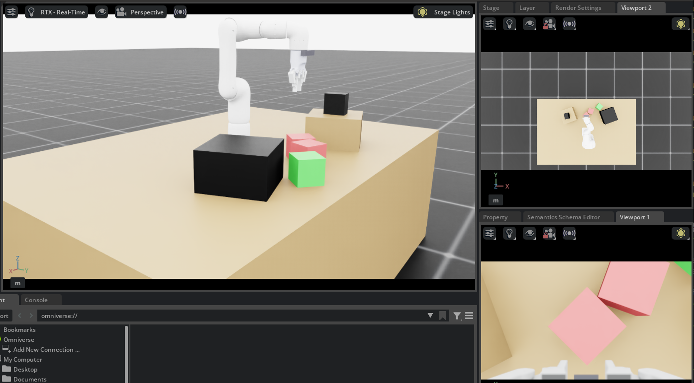
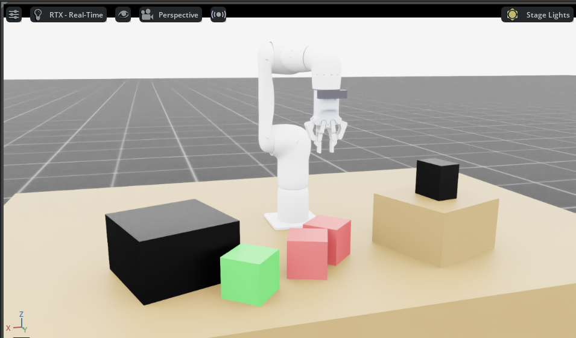
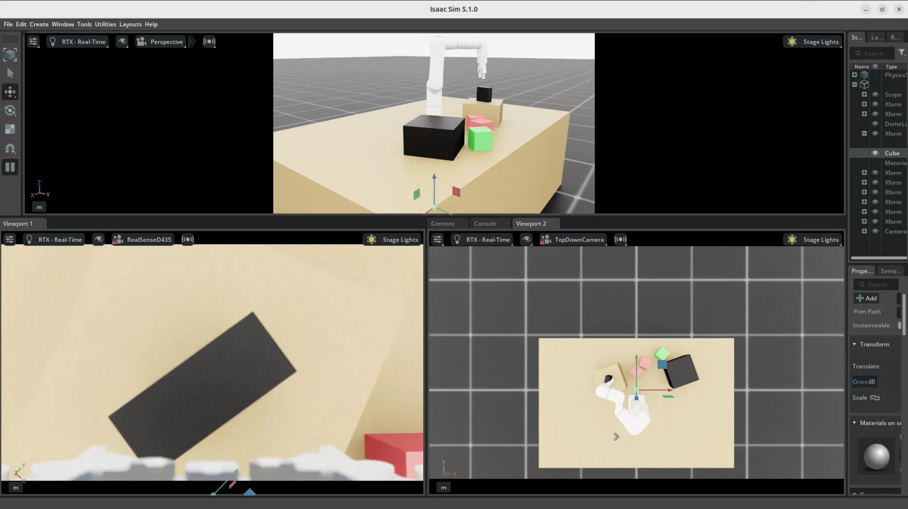
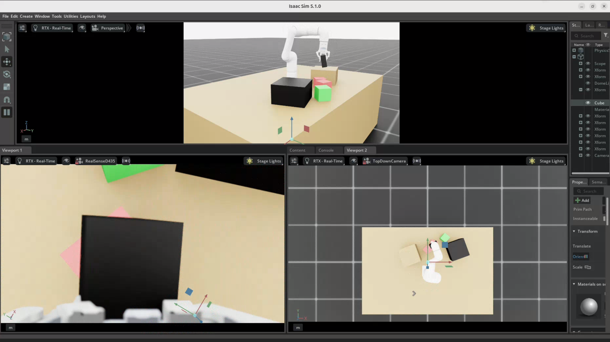
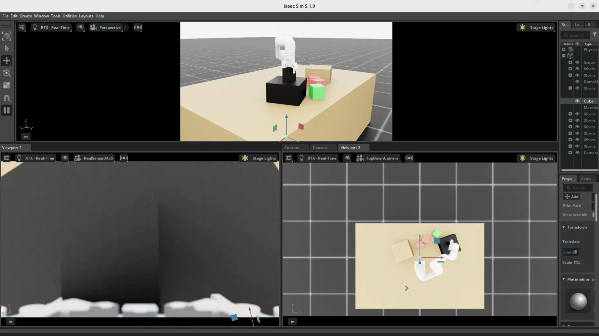

Architecture & Data Flow
This page describes the overall system architecture, how data flows between components during teleoperation and data collection, and the role of each key file in the codebase.
System Overview
The Syncro5 training pipeline collects datasets across two main environments: Simulation and
Hardware. Both environments use the **same unified logger** (SimDataLogger) to
ensure identical data formats including robot state, commanded
actions, timestamps, and images from ego and external cameras.
This architectural choice enables Strategy 2: Co-training, where a large, augmented simulation dataset is mixed with real-world grounding demonstrations to bridge the sim-to-real gap.
(syncro_sim_client.py)"] SS["Isaac Sim Server
(syncro_sim_server.py)"] CAM_SIM["Dual Cameras
(Ego & External)"] end subgraph HW["Hardware Data Collection"] HC["Teleop Client
(Keyboard Commands)"] ROS["ROS2 Bridge"] TCP["TCP/IP Server
(Proprietary Stack)"] ARM["Syncro5 Robot"] CAM_HW["Dual Cameras
(Ego & External)"] end subgraph DATA["Data Logging"] LOG["Dataset (Parquet + JPEG)
- State
- Action
- Timestamp
- Images"] end SC -->|"Joint & Gripper Commands"| SS SS --> CAM_SIM SS --> LOG CAM_SIM --> LOG HC -->|"Joint Positions"| ROS ROS -->|"TCP/IP"| TCP TCP --> ARM ARM --> LOG CAM_HW --> LOG classDef nvidia fill:#f0fae0,stroke:#76B900,color:#2a2a3a classDef addverb fill:#fce8e9,stroke:#E3000F,color:#2a2a3a class SIM nvidia class HW addverb
Simulation Server
The sim server is the heart of the pipeline, built using NVIDIA Isaac Sim and Isaac Lab. It manages the PhysX physics loop, camera rendering, and the WebSocket API.
| File | Purpose | Key Features |
|---|---|---|
syncro_sim.py |
Basic 6-joint sim server | Ground + table + cubes scene, dual cameras, WebSocket API |
syncro_sim_gripper_revolute.py |
Full sim with gripper joints | 7 joints (6 arm + 1 gripper), mimic constraints, collision |
server_data_logger.py |
Sim + data logging | Everything above + SimDataLogger at 30 Hz, Parquet output |
Physics Loop
The server runs a tight loop at 120 Hz (physics dt = 1/120s, render interval = 2):
step = 0
while simulation_app.is_running():
# 1. Read latest WebSocket command
cmd = _cmd_queue.get_nowait()
_apply_joint_command(target_pos, cmd, joint_idx)
# 2. Push target positions to PhysX
robot.set_joint_position_target(target_pos)
scene.write_data_to_sim()
# 3. Step physics & update scene
sim.step()
scene.update(sim.get_physics_dt())
# 4. Publish state to WebSocket clients (every 5 steps)
if step % 5 == 0:
_update_shared_state(robot, joint_idx)
step += 1WebSocket Bridge
The WebSocket server runs in a daemon thread alongside the physics loop. It uses a
thread-safe queue (_cmd_queue) to pass commands from the async WebSocket handler
to the synchronous physics loop.
Gripper Joints
The custom two-finger gripper opens and closes based on the teleop commands
set_gripper_state command automatically applies these commands.
Scene Configuration
The simulation scene is defined using Isaac Lab's InteractiveSceneCfg configclass. It includes:
- Ground plane with dome lighting (3000 lux)
- Table — 2.4 × 1.6 × 0.8m brown cuboid with collision
- Cubes — red and green 0.06m cubes with rigid body physics (0.1 kg)
- Robot — Syncro5 USD with custom two-finger gripper, mounted on the table surface
- Wrist camera — TiledCamera on end-effector (640×480, 30 FPS)
- Top-down camera — TiledCamera fixed overhead (640×480, 30 FPS)





Camera Configuration
| Camera | Mount | Resolution | FPS | FOV |
|---|---|---|---|---|
| Wrist (ego) | End-effector link | 640 × 480 | 30 | ~87° HFOV |
| Top-down (external) | Fixed at 2.5m height | 640 × 480 | 30 | Wide overview |
Both cameras use TiledCameraCfg with RGB and depth data types.
Client Architecture
Three types of clients connect to the sim server:
Keyboard Teleop Client
client_with_gripper.py uses a background thread for non-blocking keyboard input and an async
WebSocket loop at ~100 Hz:
# Main loop at 100 Hz
while True:
state = await ws.recv()
ch = consume_key_press()
if ch in 'qwerty':
# Increment corresponding joint by 0.03 rad
elif ch == 'u':
# Open gripper
elif ch == 'j':
# Close gripper
await asyncio.sleep(0.01)Python Client Library
syncro_sim_client.py provides SyncroSimClient, a thread-safe class with raw socket
WebSocket implementation. See API Reference for details.
ROS2 Bridge
For hardware deployment, the teleop client simultaneously sends commands to both the sim (WebSocket) and the real arm (ROS2 velocity topics). This enables real-time digital twinning and synchronized data collection.
Hardware Data Collection
The hw_data_logger.py module captures real-world demonstrations using:
- Dual USB cameras (ego wrist + external top-down)
- ROS2 joint state subscriber for current arm positions
- Same Parquet + JPEG format as sim, enabling dataset mixing for co-training
This video shows the data collection setup with the real hardware. The task is teleoperation to pick and place the black colored cube on the other side of the table.
Project File Map
| File | Role |
|---|---|
syncro_sim.py |
Basic Isaac Sim server (6 joints, no gripper) |
syncro_sim_gripper_revolute.py |
Full sim server with 12 gripper joints |
server_data_logger.py |
Sim server + integrated 30 Hz data logging |
syncro_sim_client.py |
Python client library (SyncroSimClient class) |
client_with_gripper.py |
Keyboard teleop client with gripper controls |
sim_data_logger.py |
Background logging thread (Parquet + JPEG writer) |
hw_data_logger.py |
Hardware data logger (ROS2 + dual cameras) |
data_logger_config.yaml |
Dataset schema, image settings, DOF config |